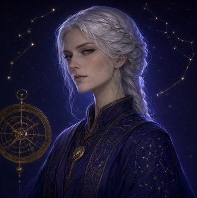

Урания · Астролог

Урания§4.2: большие схемы в переписке — компактное превью + «Открыть»; §5.2 «Интерактивная сцена» — в разговоре остаётся карточка с постоянной ссылкой. Повторное открытие — без нового расчёта.
Данные профиля подставлены с возможностью проверки (§5.2); расчёт карты бесплатный — списания нет. Слой сбоя — вид «Сбой» или проба ?fail=1.
Карта строится один раз по твоим данным и дальше живёт в профиле — Урания будет опираться на неё в каждом разборе.
Введёшь без времени — построим карту без домов: светила, знаки и аспекты посчитаем честно, а темы домов отложим до уточнения.
Можно построить карту без домов прямо сейчас — а когда найдёшь время (в свидетельстве, у мамы, в выписке), карта пересоберётся с домами и Асцендентом.
Построена по данным профиля: 05.03.1994 · 14:20 · Москва · точное время — дома и Асцендент рассчитаны.
Нажми точку планеты или выбери её списком — рассмотри крупно, сцена сохранит состояние.
☌ соединение⚹ секстиль△ трин□ квадрат☍ оппозиция
Карта сохранена — повторное открытие без нового расчёта; разбор бесплатный.
Desktop ≥1280: колесо слева, списки справа (§3.3 «большая центральная сцена»). Подписи планет — списком, не поверх колеса (§11.3). В легенде аспектов и доме — первые 10–12; полный список — серверный контракт.
О чём это: ядро личности — то, чем ты светишь, когда никто не смотрит. Рыбы дают мягкий фокус: чувствовать настроение раньше слов.
В карте рядом: соединение с Меркурием в Рыбах — думает образами; трин к Плутону — глубина без драмы.
3 дом ставит это в речь и обучение: тебе легко объяснять сложное простыми словами.
Возврат — «К карте»: раскрытые списки и позиция сохраняются, карта не пересчитывается (§6.5-паттерн: возврат без потери состояния).
Солнце в Рыбах — мягкий фокус и восприимчивость: ты считываешь настроение раньше слов.
Луна в Тельце — внутренняя опора: стабильность, тело, осязаемое. Тебя успокаивает ритуал, а не обещание.
Асцендент во Льве — в комнату ты входишь заметно: тепло, с осанкой. Люди читают тебя как уверенного — даже когда внутри прилив.
Снаружи — Лев: держит фасад и стиль. Внутри — Рыбы с Луной в Тельце: тонкий слух к людям и потребность в прочном берегу. Со стороны это выглядит как «тёплый человек, с которым надёжно», — и это точнее, чем «загадочная натура».
Раху в Стрельце — рост через расширение: обучение, дальние маршруты, смелость сказать «я знаю».
Кету в Близнецах — отпустить: коллекционирование мнений и бесконечный сбор информации ради процесса.
Следующий шаг: выбрать одно направление и углубиться на квартал — вместо десяти вкладок по бокам.
Проводить людей от хаоса чувств к форме: переводить «непонятно и тяжело» в «вот что делать». Твоя стихия — вода, стекающая в русло.
Тебе нужно, чтобы рядом был берег: человек, который не меняет маршрут каждый день. Луна в Тельце не про «романтику на вулканах», а про «один и тот же завтрак вдвоём».
Деньги к тебе приходят через мастерство, а не через гонку. Работай там, где ценят глубину: аналитика, редактура, терапевтические практики, дизайн с долгим циклом.
Соединение Солнце–Меркурий в Рыбах: думаешь образами — это плюс в работе со смыслами и минус в бюрократии. Квадрат Луны к Юпитеру: обещаний больше, чем часов в сутках — планируй с запасом.
Данные периодов — на основе транзитов (демо для макета).
Разбор — язык карты, а не приговор. Трактовка показывает склонности; выбор остаётся твоим.
Разбор сохранён вместе с картой — повторное открытие бесплатное, без нового запроса.
Проба ?fail=1 переключает сюда вид «Карта» (в проде — состояние операции, §5.3: сверка статуса до повторного запуска). Расчёт карты бесплатный — двойного списания нет, но и слепой перезапуск не нужен: операция привязана к разговору.